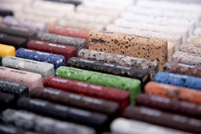
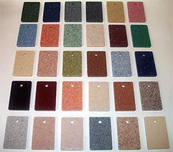

Marble Floors
It does not matter whether you choose ceramic flooring or conventional ceramic tiles, it should be strong, resistant to shock and abrasion, the material should not absorb odors and liquid and react with chemical reagents. In this respect, marble on the floor, the price of which is higher than artificial materials, has no competitors. Marble floor will last as long as possible and will not require repair and restoration work.
More aboutCoronado Stone
Coronado Stone has been the leading innovator in the manufactured stone industry for over fifty years. We have replicated some of the most sought after natural stone varieties in the world and we continue to add new products year after year. We are dedicated to offering an extensive product line with unique textures and colors that can be used to enhance any architectural style.
More aboutProducts from a stone
The production of tabletops made of natural stone, for example, from granite, is very popular today not only in Western Europe, but also in our country. The beauty and refinement of the granite stone sets the mood of the whole interior, filling every room with splendor and luxury of colors of various shades. Due to the fact that the kitchen worktop (granite) can be made in a variety of textures and color shades, the customer will always have the opportunity to pick up the countertop in accordance with the kitchen set installed in the room. Tabletops made of natural stone have significant advantages, which significantly distinguishes them in comparison with table tops made of other materials (particleboard, wood). To begin with, we note a high index of resistance to moisture. Unintentionally spilled on the surface of the material tea, milk or coffee will not cause any damage to the granite countertop. The next significant advantage is the very high strength - you do not have to worry about the fact that a blow or some other mechanical damage will cause some damage to the granite countertop. The period of operation of granite countertops is long enough (from 50 years and above). High resistance to high temperatures makes granite simply an indispensable material in the manufacture of kitchen countertops. On the surface of the material without special fears, you can place hot objects (a heated teapot, pans, etc.) without fear of spoiling it. And, of course, the main advantage of granite countertops is their natural attractiveness, which you want to admire endlessly. It is difficult to compare some other material in beauty and elegance with granite.
Concerning hygienic issues, it should be borne in mind that the surface of the granite countertops has excellent resistance to the appearance of various microbes and bacteria. In this regard, kitchen countertops made of granite are recommended for installation in kitchens, as well as in bath rooms. Marble - a luxurious stone, with many natural shades and colors. The table top made of this stone will look luxurious and exquisite. This material is durable and durable, has resistance to chips, is not afraid of temperature changes and high humidity. However, if you compare marble with granite, then the last material is more durable. Marble is sensitive to corrosive media. If the table top requires first of all functionality and durability, then it is better to prefer granite. If the super strength is not in the first place and you want just a beautiful table-top, then you can choose marble. Without a countertop in the kitchen, nowhere. It is she who assumes considerable load when cooking food. Its material should be durable, wear-resistant, so as not to lose its functional and decorative qualities under these loads and over time. One of the most solid table tops are tabletops made of natural stone. Stones can be of natural origin and artificial - thanks to the development of technology it became possible. Many analogues in terms of quality, both functional and decorative, are not inferior to natural material, but our article is about natural stone. But what is more preferable: countertops made of granite or marble?